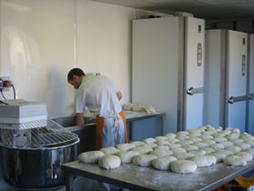

● Qui som?
Som una petita fleca situada a la comarca de La Garrotxa. Tot va començar un gener de 2007 quan l'Esteve i la Dolors van posar en marxa aquest negoci amb moltes ganes i il·lusió. I així ho han fet fins l'actualitat, intentant fer-ho millor diariament.
L'obrador amb més de 60 anys de història, on l'Esteve -amb l'ajuda d'en Miquel- fa el pa, està ubicat a la Vall de Bianya. En canvi, la botiga, on la Dolors ven els productes, està ubicada al centre d'Olot.
 Tenim una bona varietat de productes. Fem pa amb diferents blats (espelta, farro, kamut, integral...), bolleria... fins a un pastís de poma (Tatín) que venem esporàdicament.
Inici Situació Contacta'ns Galeria